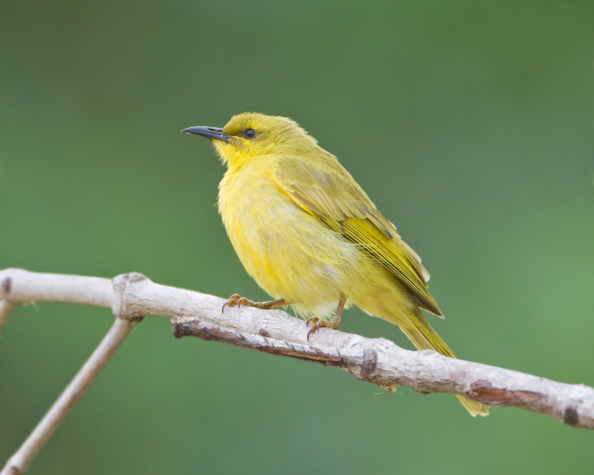

Lichenostomus flavus
The yellow honeyeater (Stomiopera flava) is a species of bird in the family Meliphagidae. It is endemic to Australia. Its natural habitats are subtropical or tropical moist lowland forest and subtropical or tropical mangrove forest. The yellow honeyeater hovers in front of the spectacular flowers of the bottlebrush orchid (Coelandria smillieae), which appear in northern Queensland between August and November, while feeding upon the nectar and pollinating the flowers.